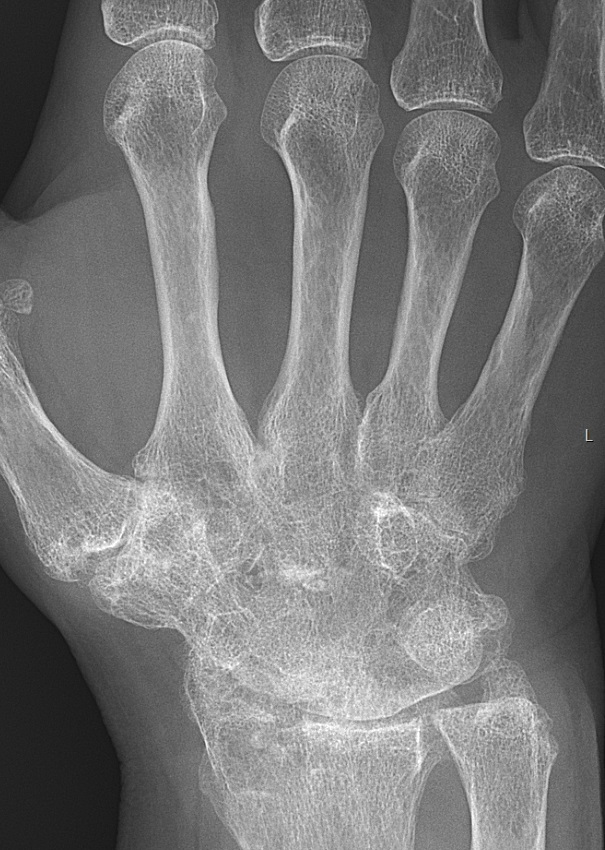

Ficha del catálogo
Artritis reumatoide
- Sistema
- Óseo
- Modalidad
- RX
- Región
- Manos y pies
- Dificultad
- Intermedio
Enfermedad inflamatoria crónica y autoinmune que ataca la membrana sinovial y produce destrucción articular simétrica. Afecta preferentemente las articulaciones metacarpofalángicas e interfalángicas proximales de las manos y las metatarsofalángicas de los pies. La radiografía documenta el daño estructural acumulado y sirve para valorar la respuesta al tratamiento.
Técnica
Radiografías posteroanteriores de ambas manos con muñecas incluidas y de ambos pies, realizadas de forma comparativa y con la misma técnica en los controles.
Qué observar
- Aumento de partes blandas periarticular fusiforme como signo más precoz
- Osteopenia yuxtaarticular en banda adyacente a las articulaciones afectadas
- Erosiones marginales en las zonas desnudas sin cobertura cartilaginosa
- Pinzamiento uniforme y concéntrico del espacio articular
- Distribución simétrica y bilateral con predominio proximal
- Deformidades tardías en ráfaga cubital, cuello de cisne y ojal
Hallazgos
Erosiones marginales simétricas con pinzamiento articular uniforme, osteopenia periarticular y tumefacción de partes blandas, sin formación ósea reactiva significativa.
Perlas
La regla que la separa de la artrosis es la ausencia de osteofitos y de esclerosis: En la reumatoide predomina la destrucción, en la artrosis la reparación. Y la afectación es de articulaciones proximales, respetando las interfalángicas distales.
Diagnóstico diferencial
- Artrosis
- Osteofitos, esclerosis subcondral y afectación de interfalángicas distales.
- Artritis psoriásica
- Distribución asimétrica, proliferación ósea y afectación de interfalángicas distales.
- Gota
- Erosiones en sacabocados con bordes sobresalientes y tofos densos.
Simuladores
- Artropatía por depósito de pirofosfato
- Artritis reactiva
- Cambios postraumáticos crónicos
Por modalidad
- RX
- Referencia para el daño estructural y su seguimiento
- US
- Detecta sinovitis, erosiones precoces y actividad con Doppler
- RM
- Muestra edema óseo, precursor de erosión futura
Protocolo
Series comparativas de manos y pies con criterios técnicos constantes. Ultrasonido dirigido para valorar actividad inflamatoria en articulaciones sintomáticas.
Clasificación
Los sistemas de puntuación radiográfica cuantifican erosiones y pinzamiento articular por articulación para seguir la progresión en el tiempo.
Errores frecuentes
- Buscar erosiones solo en las manos y omitir los pies, donde a menudo aparecen antes
- Confundir la osteopenia periarticular con osteoporosis generalizada
- No emplear técnica comparable entre estudios sucesivos

artritis reumatoide erosiones sinovitis manos simetrica osteopenia reumatologia